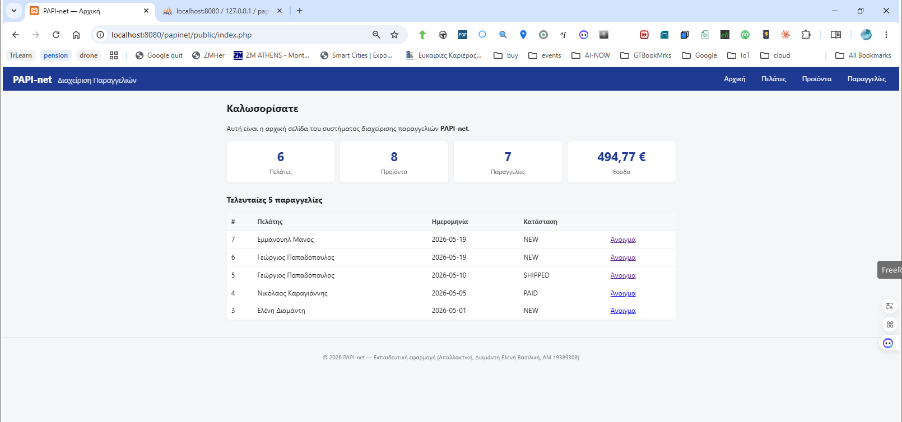
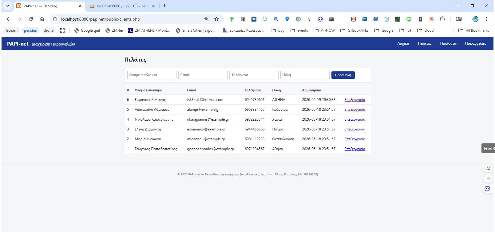
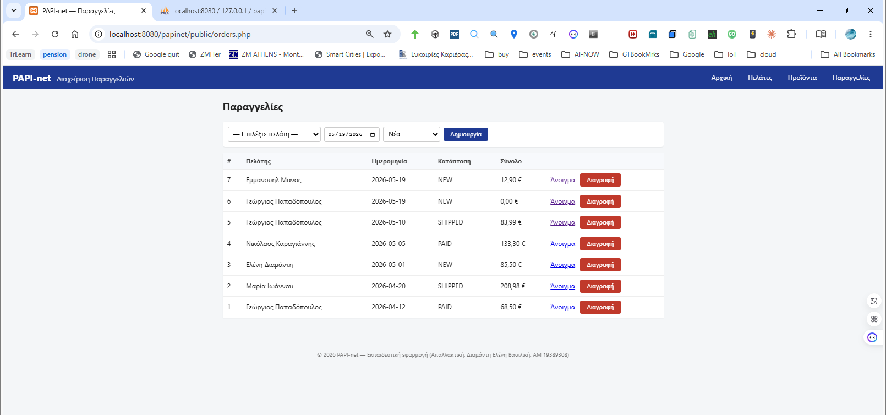
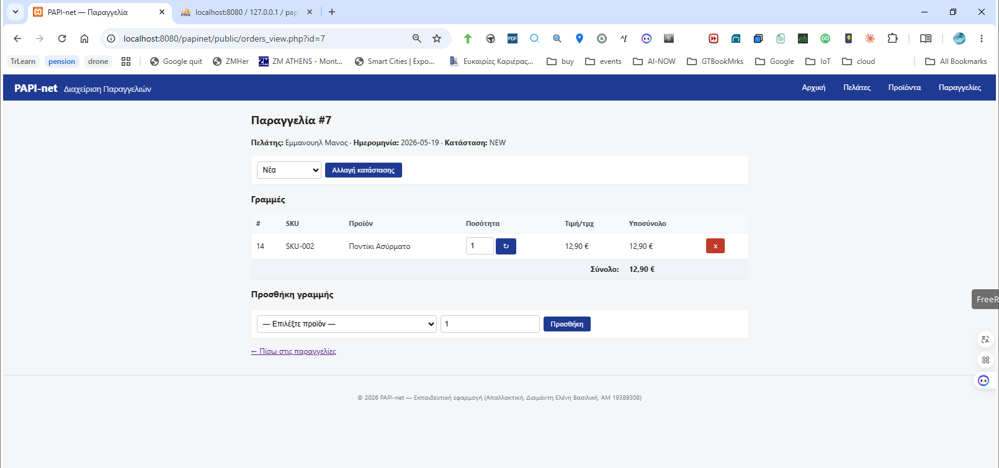

PAPI-net — Σύστημα Διαχείρισης Παραγγελιών
Δυναμική web εφαρμογή σε PHP 8 / MySQL πάνω σε XAMPP, στο πλαίσιο της απαλλακτικής εργασίας του μαθήματος «Τεχνολογία Διαδικτύου στην Ψηφιακή Βιομηχανία». Η εφαρμογή υλοποιεί ένα μικρό σύστημα διαχείρισης πελατών, προϊόντων και παραγγελιών (CRUD) με σύνδεση σε σχεσιακή βάση δεδομένων.
1. Σενάριο
Σύστημα Διαχείρισης Παραγγελιών για μικρή εμπορική επιχείρηση:
- Ο χρήστης (υπάλληλος) καταχωρεί πελάτες και προϊόντα.
- Δημιουργεί νέα παραγγελία για επιλεγμένο πελάτη.
- Προσθέτει γραμμές προϊόντων (order_items) με ποσότητα και τιμή.
- Η εφαρμογή υπολογίζει αυτόματα το σύνολο της παραγγελίας.
- Παρέχεται λίστα/αναζήτηση/επεξεργασία/διαγραφή για κάθε οντότητα.
Ροή: Πελάτης → Παραγγελία → Γραμμές Παραγγελίας → Σύνολο.
2. Αρχιτεκτονική
Κλασική 3-tier αρχιτεκτονική client–server:
- Front-end: HTML5 + CSS + ελάχιστο JavaScript (validation).
- Back-end: PHP 8 με PDO (prepared statements — προστασία από SQL injection).
- DB: MySQL/MariaDB (XAMPP default), UTF-8
(
utf8mb4).
3. Προαπαιτούμενα
| Λογισμικό | Έκδοση |
|---|---|
| XAMPP | ≥ 8.x (PHP 8.x + Apache 2.4 + MariaDB 10.x) |
| Browser | Chrome / Firefox / Edge (τρέχουσα έκδοση) |
| Λειτουργικό | Windows / Linux / macOS |
4. Εγκατάσταση
Clone του repository μέσα στον φάκελο
htdocsτου XAMPP:cd /opt/lampp/htdocs # ή C:\xampp\htdocs σε Windows git clone https://github.com/idpe19389308/papi-net.git papinetΕκκίνηση Apache και MySQL από το XAMPP Control Panel.
Άνοιγμα phpMyAdmin →
http://localhost/phpmyadmin.Δημιουργία βάσης
papinet(utf8mb4_unicode_ci) και import:sql/schema.sql(πίνακες + foreign keys)sql/seed.sql(αρχικά demo δεδομένα)
Επεξεργασία
includes/config.phpαν τα MySQL credentials διαφέρουν από τα default (root/ κενό):define('DB_HOST', 'localhost'); define('DB_NAME', 'papinet'); define('DB_USER', 'root'); define('DB_PASS', '');Άνοιγμα στον browser:
http://localhost/papinet/public/
5. Δομή φακέλων
papinet/
├── README.md ← αυτό το αρχείο
├── sql/
│ ├── schema.sql ← CREATE TABLE
│ └── seed.sql ← demo δεδομένα
├── includes/
│ ├── config.php ← DB credentials + PDO connection
│ ├── header.php ← κοινό header (navbar)
│ └── footer.php ← κοινό footer
├── public/
│ ├── index.php ← αρχική / dashboard
│ ├── clients.php ← λίστα + CRUD πελατών
│ ├── products.php ← λίστα + CRUD προϊόντων
│ ├── orders.php ← λίστα παραγγελιών
│ ├── orders_view.php ← λεπτομέρειες παραγγελίας + items
│ └── assets/
│ └── style.css
└── docs/
└── img/ ← screenshots για README6. ER διάγραμμα
Σχέσεις: - clients 1 — N
orders - orders 1 — N order_items
- products 1 — N order_items
7. Δυναμικές σελίδες (7 σελίδες, ≥ 4)
| Σελίδα | Περιγραφή | CRUD |
|---|---|---|
public/index.php |
Dashboard: σύνολα πελατών, παραγγελιών μήνα, top προϊόν | R |
public/clients.php |
Λίστα πελατών + αναζήτηση (ονοματεπώνυμο/email) + προσθήκη | C/R |
public/clients_edit.php |
Επεξεργασία/διαγραφή στοιχείων πελάτη | U/D |
public/products.php |
Κατάλογος προϊόντων με τιμές & απόθεμα + προσθήκη | C/R |
public/products_edit.php |
Επεξεργασία/διαγραφή προϊόντος | U/D |
public/orders.php |
Λίστα παραγγελιών με φίλτρο κατάστασης + δημιουργία νέας | C/R/D |
public/orders_view.php |
Λεπτομέρειες παραγγελίας — προσθήκη/αφαίρεση γραμμών | R/U/D |
7.1 Λειτουργίες αναζήτησης & φίλτρου
clients.php— Φόρμα αναζήτησης ελεύθερου κειμένου (παράμετρος?q=). Αναζητά case-insensitive σεfullnameήemailμε PDO prepared statement και wildcards%q%. Κενό πεδίο → εμφανίζονται όλοι.orders.php— Dropdown φίλτρου κατάστασης (παράμετρος?status=). Επιλογές: Όλες, Νέα, Πληρωμένη, Απεσταλμένη, Ακυρωμένη. Τιμή σε whitelist guard (anti-injection)·ALL→ χωρίςWHERE.
8. Screenshots
Τα screenshots θα τα προσθέσω η ίδια μετά την τοπική εγκατάσταση. Τοποθετούνται στον φάκελο
docs/img/.




9. Άδεια χρήσης
MIT License — το repository είναι δημόσιο στο GitHub.
10. Δήλωση εργαλείων ΤΝ
Όπως ζητάει η εκφώνηση, αναφέρω παρακάτω τη χρήση εργαλείων Τεχνητής Νοημοσύνης κατά την υλοποίηση της εργασίας.
Για το κείμενο της αναφοράς χρησιμοποίησα κυρίως το ChatGPT για ορθογραφικό έλεγχο, για αναδιατυπώσεις σε προτάσεις, και κάποιες φορές για να μου δώσει μια ιδέα για το πώς να δομήσω καλύτερα μια ενότητα.
Για τις δυναμικές σελίδες της εφαρμογής (Μέρος Α) χρησιμοποίησα τον Claude (Anthropic). Για παραδειγματα κώδικα PHP/PDO. Στη συνέχεια διάβαζα τον κώδικα γραμμή προς γραμμή, τον τροποποιούσα όπου ήθελα διαφορετική λογική ή UI, και τον δοκίμαζα τοπικά πάνω σε XAMPP.
Για τις διαμορφώσεις του δικτύου (Μέρος Β) χρησιμοποίησα επίσης τον Claude. Για τις καταλληλες εντολες Cisco IOS (VLAN configuration, dot1Q subinterfaces, router ospf, access-lists, εφαρμογή ACL inbound στις subinterfaces). Δοκίμασα τα configs μέσα στο Packet Tracer, εντόπισα κάποια λάθη αντιστοίχισης IP που δεν ταίριαζαν με το PDF της εκφώνησης (συγκεκριμένα στο WAN link R-CHA ↔︎ R-PAT) και τα διόρθωσα.
Όλος ο κώδικας και όλα τα configs δοκιμάστηκαν από εμένα στο τοπικό μου περιβάλλον πριν την παράδοση.
11. Συγγραφέας
- Σπουδάστρια: Ελένη Βασιλική Διαμάντη
- Α.Μ.: 19389308
- Διδάσκων: Δρ. Μιχάλης Ξευγένης
- Μάθημα: Τεχνολογία Διαδικτύου στην Ψηφιακή Βιομηχανία
- Ακαδημαϊκό έτος: 2025–2026